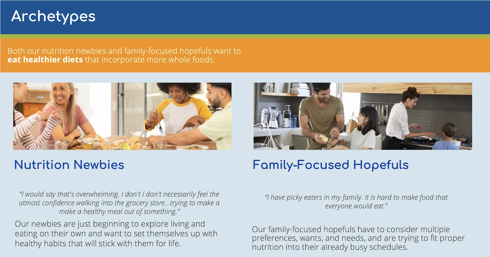
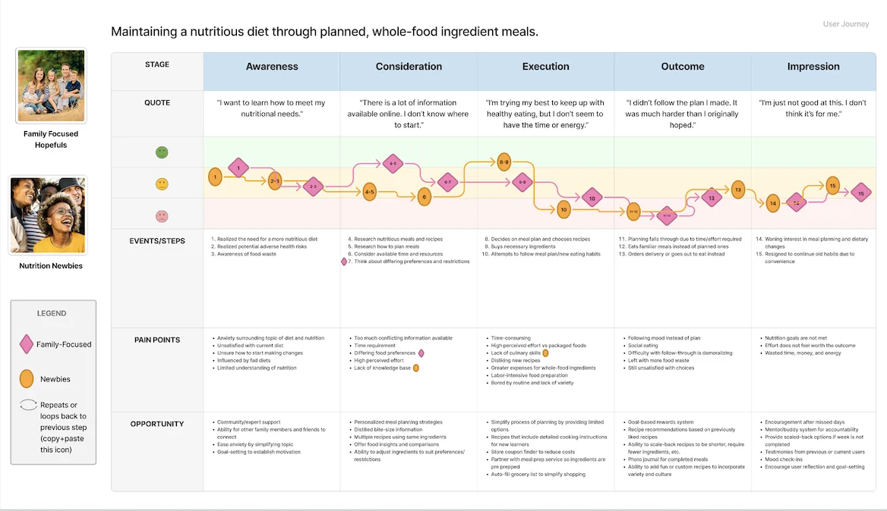
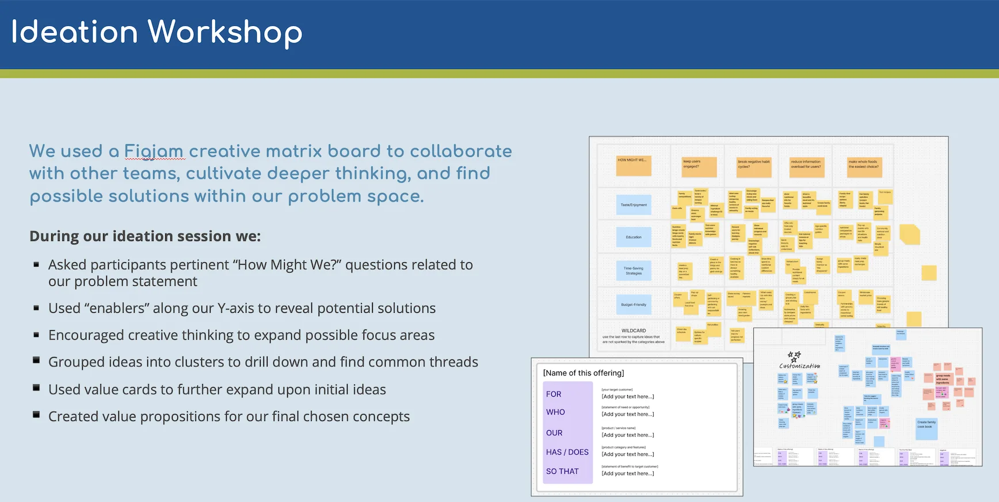
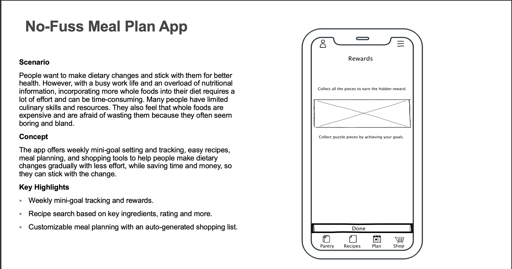
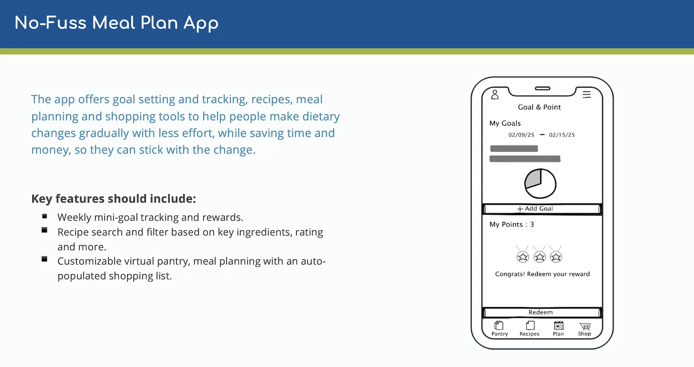
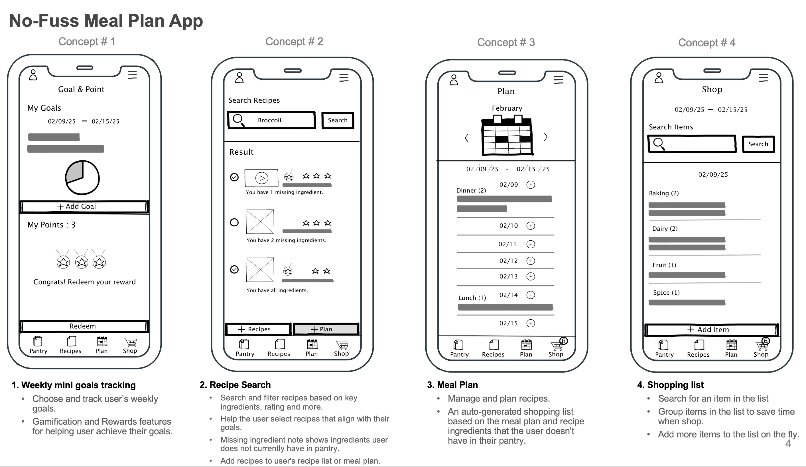

2025 — App Design
A streamlined meal-planning experience for busy users — from quick onboarding to weekly plans and grocery-ready lists — designed to reduce decision fatigue and keep healthy eating realistic.
View Final PresentationHow might we help people get 100% of their daily nutritional needs met through whole foods every day?
A synergistic platform built around simple meals that need limited equipment — a drag-and-drop meal calendar, a community rating system, and auto-populated shopping lists linked directly to grocery delivery services.
Conducted 21 in-depth interviews (40 min avg.) to understand dietary habits, meal planning, and nutrition-app usage. Five themes stood out: a motivation gap that causes users to lose steam and revert to old habits, information overload from conflicting nutrition advice, limited cooking skills that create a barrier for newcomers, time constraints that make healthy eating hard to sustain for busy families, and resistance to shifting from an “all-or-nothing” mindset to gradual behavior change.
Research surfaced two primary archetypes: “Nutrition Newbies,” who have limited cooking skills and feel daunted by the research required to get started, and “Family-Focused Hopefuls,” whose time constraints and picky eaters make healthy eating hard to sustain.

Mapping each archetype’s journey highlighted where motivation typically drops off, and where a small, well-timed nudge could keep someone on track.

A review of leading nutrition, meal-planning, and wellness platforms — including MyFitnessPal, Noom, and Lifesum for tracking and habit coaching, HelloFresh and PlateJoy for personalized meal delivery, and Yuka for ingredient transparency — showed most tools optimize for tracking or delivery, but few help someone build a sustainable, whole-foods habit from scratch.
In a collaborative ideation workshop, the team used a FigJam creative matrix to translate research and competitive insights into product opportunities focused on simplifying healthy eating and supporting sustainable behavior change.

No-Fuss Meal Plan is a mobile meal-planning app designed to make healthy eating easier by creating meal plans based on key ingredients for people who feel overwhelmed by nutrition advice and habit change.
The app speaks to two research-backed archetypes — “Nutrition Newbies” and “Family-Focused Hopefuls” — who both want to eat more whole foods but feel overwhelmed by conflicting advice, struggle to change habits, and see healthy cooking as time-consuming.
Low-fidelity wireframes in Figma let the team rapidly test concepts, user flows, and information architecture while keeping the focus on usability rather than visual polish. Key features include goal tracking and rewards, recipe search with personalized filters and ingredient alerts, flexible weekly and monthly meal planning, auto-generated shopping lists, and simple navigation across Pantry, Recipes, Plan, Shop, and Profile.



Tested the concept with six participants to validate its ability to simplify meal planning and support gradual dietary change. Users valued having pantry management, meal planning, and shopping lists in a single platform, especially finding recipes based on ingredients they already had, and responded most positively to features that reduced planning effort and made progress visible. Next steps are to simplify the interface further, personalize recommendations based on dietary needs, and streamline shopping through smarter lists and delivery integrations.
Check out other works by Orawan